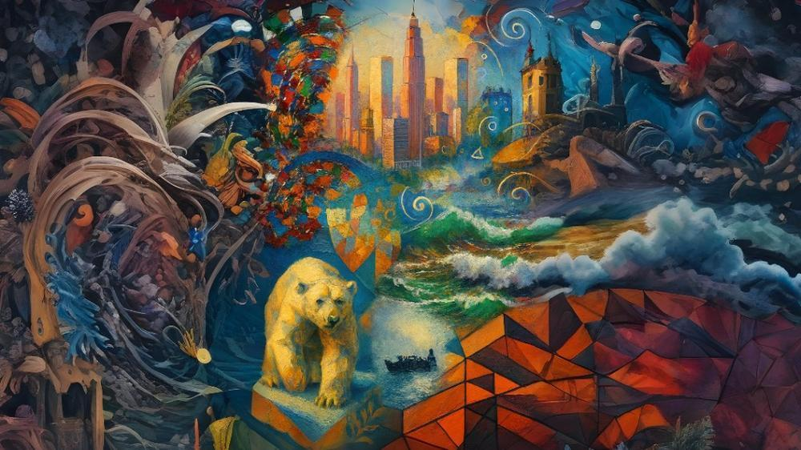
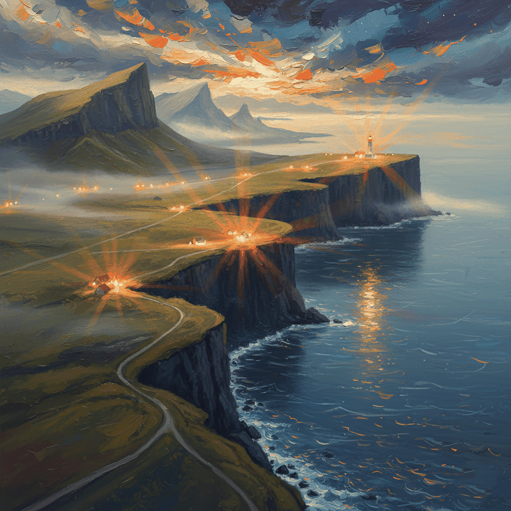

Memorándum EDUSSE
EDUSSE es un universo pictórico en expansión, una constelación de estilos que comparten un principio fundamental: la figura no representa; la figura permite. En EDUSSE, cada obra se construye desde el tratamiento pictórico —el trazo, la energía, la atmósfera, la estructura— y no desde el motivo. La pintura deja de ser ventana y se convierte en campo de acción, donde el color, la materia y el gesto definen la identidad de cada pieza.
Este universo se organiza en familias estilísticas que dialogan entre sí: líneas de energía, de estructura, de atmósfera, de intervención y de claridad formal. Cada estilo es una rama autónoma, pero todos comparten una misma raíz conceptual: la libertad absoluta para redefinir la pintura desde dentro.
EDUSSE no es un estilo único, sino un ecosistema. Un territorio donde conviven la vibración gestual, la geometría facetada, la atmósfera suspendida, la intervención gráfica y la materia erosionada. Un espacio donde cada obra es una variación, una expansión o una mutación del mismo principio: pintar no lo que se ve, sino lo que vibra.
Índice Numérico del Universo EDUSSE
- 00 EDUSSE
- 01 EXP NEOCIRC
- 02 CUBESSE
- 03 EXPNEOPLUS
- 04 APLICC
- 05 PLUMINK
- 06 IDE CLASSIC
- 07 NEOINK
- 08 BORACARBON
- 09 FRACNEO
- 10 OLEOCUBBO
- 11 URBANSPHERIC
- 12 CRISTAL CUBICO
- 13 RECTESSE
- 14 TEREXSE
- 15 CUBESSEPLUS
- 16 EXPNEO
- 17 FUZZTESS
- 18 ABSTRACTO CONFLUENCIA
- 19 FUZZLINE ABS
- 20 BORASSIE
- 21 OCE-BURST
- 22 NEO-LUMINA
- 23 TRIDIM-BURST
- 24 BORACARBON MONUMENTOS
- 25 CAPLIVE
- 26 CARL LINE
- 27 LINEVORT
- 28 ESPATAC
- 29 ESPATAC-MAT
- 30 OLONATUR-COLOR
- 31 OLENATUR
- 32 SINNOIR
- 33 MINIGESTPOETIC
- 34 EXPTERICO
- 35 PAPERCHIN
- 36 LINEART
- 37 IMPASTUS PAINT
- 39 MATERDIGISSE
- 40 MECHPASTOSSE
- 41 GESSOLUX
- 42 GESSOLUX EXTREMUM
- 43 GESSOLUX MONOCHROMA
- 44 GESSOLUX AZURITE
- 45 GESSOLUX IRIS
- 46 ESPATAC-EXTREME
- 47 NEBULÍNICO
- 48 BESSELUXY L
- 49 ARTE CIBERNÉTICO NATURE
- 50 NEO FAUVE
- 51 NEO-CLÁSICO
- 52 EDUSSE CLASSIC
- 53 MONETESSE
- 54 LUNIORNAT PORTADAS DE DISCOS
- 55 VORGGIPAH
- 56 NATURALEXSSE
- 57 STUCKEDU (PINTOR DE AUTOR)
- B2B B2B MAGNA (SUPER LUJO)
- --- HISTORIA CINCELADA
00 EDUSSE
EDUSSE funciona como marco conceptual, identidad estética y territorio simbólico donde se articulan todas las líneas creativas del artista. Es un lenguaje total donde figura y fondo, materia y significado, emoción y estructura conviven sin jerarquías.
Rasgos Esenciales
Hibridación de lenguajes, narrativa simbólica, color expresivo y composición total donde no existe "fondo".
Tratamiento Visual
Libertad técnica absoluta. La unidad no viene de la técnica, sino del significado.
01 EXP NEOCIRC
Nace de la idea de que una escena puede girar, vibrar y respirar alrededor de un eje. El color es vibrante, la pincelada es visible y dinámica, y las escenas suelen tener un tono emocional, casi de postal poética.
Rasgos Esenciales
Composición circular, pincelada suelta y color saturado. Motivos de puertos, barcos, pueblos.
Función
Aporta al universo EDUSSE su vertiente más luminosa, narrativa y emocional.
02 CUBESSE
Más que un estilo técnico, CUBESSE es una identidad visual. Las obras se construyen por planos, color y volumen, sin atmósfera difusa: todo es materia pictórica firme.
Rasgos Esenciales
Geometría angular, planos facetados, pincelada gruesa tipo óleo impasto. Motivos animales o humanos estructurales.
03 EXPNEOPLUS
Mantiene la pincelada envolvente pero amplifica la escala y la energía. Ideal para representar grandes monumentos, ciudades icónicas o escenas históricas con fuerza visual.
Rasgos Esenciales
Composición radial o centrífuga, escala monumental, luz envolvente. Motivos arquitectónicos como símbolos.
04 APLICC
Combina color vibrante y composición escénica para transmitir fuerza y libertad. Es un estilo que aplica una fuerza, como una afirmación visual.
Rasgos Esenciales
Figura central con carga simbólica (águila, león), color vibrante, fondo dramático.
05 PLUMINK
Se apoya en la ligereza del pigmento y la espontaneidad del gesto. Las obras no buscan representar, sino evocar. El trazo es líquido y el color diluido.
Rasgos Esenciales
Pincelada acuarelada, bordes difusos, luz atmosférica, composición abierta.
06 IDE CLASSIC
Representación cuidada con trazo limpio y color armónico. La figura no representa: permite. Lo que importa es la elegancia de la ejecución.
Rasgos Esenciales
Composición centrada y equilibrada. Pincelada contenida, estética de claridad y belleza formal.
07 NEOINK
La figura central se trata como estructura de fuerza para aplicar gesto y color. Transmite elevación y atmósfera sin depender de lo figurativo.
Rasgos Esenciales
Composición vertical o radiante. Luz envolvente (halos, rayos). Paletas de violetas, dorados, azules.
08 BORACARBON
Sobriedad visual y textura narrativa. Transmite introspección, pausa y memoria mediante una paleta reducida a lo esencial.
Rasgos Esenciales
Paleta monocroma (grises, sepias). Composición silenciosa, textura suave, luces tenues.
09 FRACNEO
Construye escenas mediante bloques, planos y color. Las figuras no importan por lo que son, sino por cómo vibran al ser fragmentadas.
Rasgos Esenciales
Composición densa de bloques superpuestos. Color saturado en tensión. Ritmo visual arquitectónico.
10 OLEOCUBBO
Aplica geometría visual sobre figuras que permiten la construcción. Todo es materia pictórica: planos angulares, trazo visible y solidez.
Rasgos Esenciales
Geometría facetada, pincelada impasto, figura como bloque pictórico. Ausencia de atmósfera difusa.
11 URBANSPHERIC
Estilo visual atmosférico que representa escenas suspendidas en un silencio emocional. No depende del motivo, sino de la atmósfera: niebla, luz difusa, pincelada envolvente.
Rasgos Esenciales
Paleta fría/desaturada, luz difusa desde la niebla, composición que sugiere melancolía o pausa.
12 CRISTAL CUBICO
Construye la urbe desde el color y el plano vibrante. Transmite monumentalidad y ritmo sin depender de la representación arquitectónica realista.
Rasgos Esenciales
Verticalidad, luz facetada (reflejos, brillos), tonos m&etallic;licos o vibrantes. Composición densa.
13 RECTESSE
La línea recta actúa como gesto compositivo que corta y organiza el plano pictórico. Tensión entre lo orgánico del color y lo rígido de la estructura.
Rasgos Esenciales
Segmentación por líneas rectas. Bloques de materia pictórica separados geométricamente.
14 TEREXSE
Evoca formaciones naturales tratadas como pura materia pictórica. Transmite el peso de la tierra, el viento y el tiempo geológico.
Rasgos Esenciales
Textura erosionada, colores minerales (ocres, tierras), relieve pictórico.
15 CUBESSEPLUS
Combina geometría pictórica con iconografía simbólica. Representa figuras míticas, divinas o heroicas construidas por planos pictóricos con presencia escénica absoluta.
Rasgos Esenciales
Geometría facetada aplicada a mitología. Luz dramática y composición monumental.
16 EXPNEO
Evoca pausa, luz y textura. La figura es un vehículo de estilo para transmitir serenidad o nostalgia, con un ritmo visual contenido.
Rasgos Esenciales
Luz cálida suspendida, pincelada texturizada, atmósfera suave pero vibrante.
17 FUZZTESS
Distorsión rítmica sobre superficies naturales o abstractas. La obra es un campo de vibración donde la textura define la experiencia.
Rasgos Esenciales
Pincelada ondulante, composición sin centro (expansiva), color saturado.
18 ABSTRACTO CONFLUENCIA
Composiciones dinámicas donde la pincelada libre genera caos armónico. No hay figuración, solo confluencia de fuerzas.
Rasgos Esenciales
Movimiento circular o espiral, colisión de trazos, energía visual pura.
19 FUZZLINE ABS
Composiciones pictóricas intervenidas con elementos gráficos (líneas, espirales) para generar una capa de energía visual extra.
Rasgos Esenciales
Intervención gráfica (líneas blancas, puntos) sobre base pictórica. Contraste entre lo gráfico y lo pictórico.
20 BORASSIE
En proceso de clasificación. Análisis técnico y conceptual de este estilo en desarrollo para el Universo EDUSSE.
21 OCE-BURST
Pincelada Escultórica: No solo hay color, hay "materia". Los trazos blancos de la espuma parecen tener relieve, aportando una textura táctil.
Paleta Cromática Audaz: Rompe con el azul tradicional del mar integrando verdes esmeralda, púrpuras profundos y destellos anaranjados/rosáceos que sugieren una luz de atardecer muy dramática.
Dinamismo Abstracto: La fuerza de la pincelada roza la abstracción, de una forma casi emocional, no solo visual.
Rasgos Esenciales
Textura táctil (relieve), contraste cromático inusual, energía en el borde de la abstracción.
22 NEO-LUMINA
En proceso de clasificación. Análisis técnico y conceptual de este estilo en desarrollo para el Universo EDUSSE.
23 TRIDIM-BURST
En proceso de clasificación. Análisis técnico y conceptual de este estilo en desarrollo para el Universo EDUSSE.
24 BORACARBON MONUMENTOS
En proceso de clasificación. Análisis técnico y conceptual de este estilo en desarrollo para el Universo EDUSSE.
25 CAPLIVE
En proceso de clasificación. Análisis técnico y conceptual de este estilo en desarrollo para el Universo EDUSSE.
26 CARL LINE
En proceso de clasificación. Análisis técnico y conceptual de este estilo en desarrollo para el Universo EDUSSE.
27 LINEVORT
En proceso de clasificación. Análisis técnico y conceptual de este estilo en desarrollo para el Universo EDUSSE.
28 ESPATAC
En proceso de clasificación. Análisis técnico y conceptual de este estilo en desarrollo para el Universo EDUSSE.
29 ESPATAC-MAT
En proceso de clasificación. Análisis técnico y conceptual de este estilo en desarrollo para el Universo EDUSSE.
30 OLONATUR-COLOR
En proceso de clasificación. Análisis técnico y conceptual de este estilo en desarrollo para el Universo EDUSSE.
31 OLENATUR

En proceso de clasificación. Análisis técnico y conceptual de este estilo en desarrollo para el Universo EDUSSE.
32 SINNOIR
En proceso de clasificación. Análisis técnico y conceptual de este estilo en desarrollo para el Universo EDUSSE.
33 MINIGESTPOETIC
En proceso de clasificación. Análisis técnico y conceptual de este estilo en desarrollo para el Universo EDUSSE.
34 EXPTERICO
En proceso de clasificación. Análisis técnico y conceptual de este estilo en desarrollo para el Universo EDUSSE.
35 PAPERCHIN
En proceso de clasificación. Análisis técnico y conceptual de este estilo en desarrollo para el Universo EDUSSE.
36 LINEART
Nace de la intersección de líneas dinámicas y geometría emocional. Busca la máxima expresión con el mínimo trazo, dejando que el vacío sea parte activa de la composición.
Rasgos Esenciales
Trazado continuo, elegancia lineal, equilibrio entre forma y vacío. 19,99€
37 IMPASTUS PAINT
Celebra la fuerza física de la pintura. La materia se acumula en el lienzo digital simulando el relieve del óleo real, capturando la luz en cada arista del trazo.
Rasgos Esenciales
Relieve matérico, pincelada densa, vibración de color. 19,99€
39 MATERDIGISSE
En proceso de clasificación. Análisis técnico y conceptual de este estilo en desarrollo para el Universo EDUSSE.
40 MECHPASTOSSE
La máquina es piel, la pintura es circuito, el error es belleza. En este estilo, la pincelada se trata como una pieza mecánica y las grietas doradas tipo kintsugi revelan una energía interna latente.
Rasgos Esenciales
Materia densa, espátula constructiva, grietas doradas y núcleo de rojo vital. Luz quebrada sobre metal erosionado.
Lema
Materia que respira. Máquina que siente.
41 GESSOLUX
El yeso fino actúa como piel mineral sobre la que la espátula suave moldea la luz. Es un estilo donde la materia tiene la primacía sobre el pigmento, buscando una pureza táctil.
Rasgos Esenciales
Uso de yeso como base, espátula suave, luz mineral emergente.
42 GESSOLUX EXTREMUM
La pintura se convierte en luz seca. Se caracteriza por un relieve de yeso pulido y una paleta dominada por blancos y grises pálidos, casi cegadores.
Rasgos Esenciales
Blanco dominante, relieve pulido, estética mineral radical.
43 GESSOLUX MONOCHROMA
El silencio blanco. La luz es revelada únicamente por el ritual del gesto silencioso sobre la materia. No hay color, solo la vibración del relieve en blanco y grises neutros.
Rasgos Esenciales
Monocromía mineral, pigmento de yeso, ritual del gesto.
44 GESSOLUX AZURITE
Sustitución del blanco tradicional por el azul mineral. La materia respira frío, evocando paisajes de cristal y minerales profundos.
Rasgos Esenciales
Azul estructural, luz fría, atmósfera mineral cristalina.
45 GESSOLUX IRIS
La luz mineral se descompone en un espectro vibrante. Combina la pincelada rítmica espiralada con amarillos, rojos y azules que emergen del relieve de yeso.
Rasgos Esenciales
Luz prismática, espectro vibrante, pincelada rítmica.
46 ESPATAC-EXTREME
Grito matérico. En este estilo, la pintura abandona su bidimensionalidad para proyectarse en el espacio realandona su bidimensionalidad para proyectarse en el espacio real. Las sombras no son pintadas, son sombras arrojadas reales generadas por el relieve masivo de la espátula.
Rasgos Esenciales
Relieve tridimensional masivo, iluminación brutalista, honestidad matérica brutal.
47 NEBULÍNICO
La identidad de la niebla. El trazo se aplica con carga gruesa y casi escultórica, dejando surcos visibles que atrapan la luz. La forma se disuelve en el ambiente brumoso, pero la materia reclama su presencia a través del relieve táctil.
Rasgos Esenciales
Paleta gris-azulada, acentos cálidos (rojo/naranja), atmósfera húmeda, relieve táctil sobre bruma.
48 BESSELUXY L
Estructura un volumen complejo y orgánico con un acabado completamente mate, conservando una fuerte sensación de peso arquitectónico mediante la fusión sutil de luces y sombras.
Rasgos Esenciales
Óleo húmedo sobre húmedo (alla prima), paleta terrosa y figura recortada sobre lienzo crudo expuesto.
49 ARTE CIBERNÉTICO NATURE
Capas de energía bioluminiscente y fluidos sintéticos sobre formas animales y vegetales. La materia orgánica se transforma en circuitos visuales vivos que palpitan con luz propia.
Rasgos Esenciales
Cianes lumínicos, verdes selváticos saturados, trazo vectorial fluido sobre materia pictórica densa.
50 NEO FAUVE
Inspirado en la libertad salvaje de los fauvistas, replanteado desde el lenguaje contemporáneo EDUSSE. Masas puras de pigmento encendido que estructuran el espacio y la atmósfera.
Rasgos Esenciales
Contraste vibrante, pincelada ancha gestual, luminosidad saturada sobre fondos dramáticos.
51 NEO-CLÁSICO
Modelado sereno de la figura humana y la arquitectura, suspendido en una atmósfera de penumbra velada y dorados antiguos que evocan la serenidad atemporal.
Rasgos Esenciales
Claroscuro velado, estudio minucioso de la luz sobre drapeados y piel, acabado aterciopelado sobrio.
52 EDUSSE CLASSIC
Estudio de la fauna y flora donde el realismo impecable de la forma coexiste con la vibración abstracta del fondo pictórico y el trazo suelto.
Rasgos Esenciales
Detalle naturalista en el sujeto principal, fondo erosionado gestual, uso de pigmentos orgánicos terrosos.
53 MONETESSE
Una mirada contemporánea al impresionismo lumínico donde los objetos y escenarios se fragmentan en pequeños toques de color puro que el ojo del espectador reconstituye en movimiento.
Rasgos Esenciales
Pincelada dividida, luz atmosférica cambiante, superposición de capas húmedas de color.
54 LUNIORNAT PORTADAS DE DISCOS
Composiciones de alto impacto simbólico pensadas como portadas emblemáticas. Fusiona el diseño gráfico de vanguardia con la textura densa de la pintura al óleo.
Rasgos Esenciales
Formato cuadrado/icónico, composición central de fuerte presencia, lenguaje conceptual directo.
55 VORGGIPAH
Una exploración tridimensional del entorno donde las montañas, los cuerpos de agua y las edificaciones tradicionales se sintetizan en volúmenes compactos y planos de color denso.
Rasgos Esenciales
Materia pictórica escultórica, arquitectura integrada en el paisaje, paleta atmosférica de alta presencia.
56 NATURALEXSSE
Una serie orgánica de profunda carga sensorial. Integra la figura humana, los instrumentos musicales y los elementos de la naturaleza (maíz, roca, fósiles) en una textura viva y táctil de gran calidez plástica.
Rasgos Esenciales
Textura terrenal y mineral, simbiosis figura-naturaleza, paleta orgánica con matices ocres, dorados y pétreos.
57 STUCKEDU
Una de las series más emotivas y singulares de la galería. Representa al pintor interior creado por el artista: fondos sombríos y densos (verde-grisáceo, carbón, pizarra) rotos por pigmentos puros de alta vibración (cobalto, ocres cadmio, naranjas tostados, blanco titanio), con contornos que se funden suavemente en la atmósfera sobre lienzo de lino.
Rasgos Esenciales
Estructura: 60-80% espacio negativo continuo, motivos en franja inferior.
Cromática: Claroscuro sobrio, fondos quebrados y pigmentos puros en contraste térmico.
Materia: Óleo alla prima, empaste grueso rítmico, cerda y espátula.
Soporte: Lino con trama visible y relieve matérico palpable.
B2B MAGNA (ACCESO EXCLUSIVO)
Obras de escala colosal y acabado magistral creadas expresamente para espacios de representación, cadenas hoteleras de lujo y colecciones corporativas privadas.
Rasgos Esenciales
Gran formato monumental, pigmentos dorados y metálicos preciosos, certificación y dossier de proyecto singular.
HISTORIA CINCELADA
Un viaje por el patrimonio arquitectónico y la memoria a través de incisiones profundas, texturas graníticas y relieves cincelados que emulan la imprenta histórica.
Rasgos Esenciales
Relieve en alta definición, texturas de grabado clásico, tono sepia y piedra tallada.